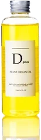
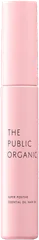
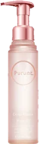
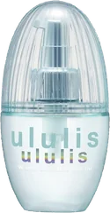

5位

Dplus
プラントオリジンオイル
150mL
¥1,078税込・出典掲載価格
クチコミの要約
- 髪にも顔にも体にも使える
- N.のオイルに似てるって声
- 軽いオイルを安く試すなら
気になる声傷んだ髪には物足りないって声も
販売価格・容量・送料はリンク先でご確認ください
THE COSME EDIT / 2026.09.16
動画で紹介した5品です。順位は売上ではなく、@cosmeのクチコミ件数の順です。
05 ITEMS 動画で紹介した商品
候補は、ドンキで買えるヘアオイルとして紹介している記事（マイナビおすすめナビ、コスメルポ）から、サロン専売品を除いて選び、楽天で買えるものだけにしました。件数は、いま売っている商品のページの数字です。YOLU カームナイトリペアヘアオイルは@cosmeで生産終了になり、リニューアル後の商品は楽天で同じ商品か確かめきれなかったので外しています。
価格は出典掲載時のものです。楽天の現在価格とは異なる場合があります。

Dplus
150mL
¥1,078税込・出典掲載価格
クチコミの要約
気になる声傷んだ髪には物足りないって声も
販売価格・容量・送料はリンク先でご確認ください

THE PUBLIC ORGANIC
60mL
¥1,760税込・出典掲載価格
クチコミの要約
気になる声つけすぎるとベタつくって声も
販売価格・容量・送料はリンク先でご確認ください

Purunt.
80mL
¥1,540税込・出典掲載価格
クチコミの要約
気になる声細い髪だと重い人もいる
販売価格・容量・送料はリンク先でご確認ください

ululis
100mL
¥1,540税込・出典掲載価格
クチコミの要約
気になる声香りがキツく感じる人も
販売価格・容量・送料はリンク先でご確認ください

ellips
50粒
¥2,090税込・出典掲載価格
クチコミの要約
気になる声カプセルが開けにくいって声も
販売価格・容量・送料はリンク先でご確認ください
SOURCE & NOTES
集計期間：2026年9月13日に確認した件数です。売上の順ではありません。
価格は@cosmeに載っている税込価格です。Dplusは@cosmeに価格が無いため、2026年9月13日に楽天の商品ページで確認した価格です。ドンキの店頭では価格が大きく違うことがあります。